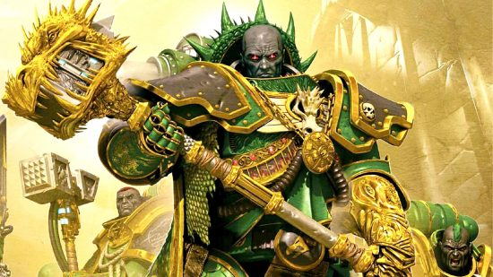

Lore de los Salamanders
Los Salamanders son una de las primeras legiones Astartes, conocidos por su habilidad en la forja y su lealtad inquebrantable al Emperador. Vienen del planeta volcánico Nocturne, donde el calor intenso y la lava son parte de su vida diaria.
Héroes Legendarios
Entre sus héroes más reconocidos se encuentra su Primarca Vulkan, un semidiós forjador que sigue influyendo en la legión, incluso después de su desaparición.

Tácticas de Combate
Los Salamanders se destacan por su uso de armas de fusión y lanzallamas, llevando el poder del fuego a sus enemigos. Su estrategia se centra en la resistencia y la brutalidad del combate a corta distancia.
Galería de Imágenes
Pronto actualizaremos este espacio con imágenes de los Salamanders en combate.